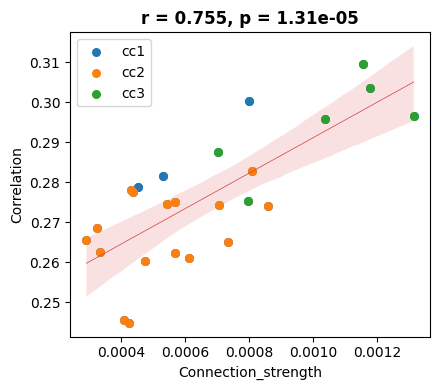

10_ctx_cc_connection_and_correlation
[1]:
import pandas as pd
import scanpy as sc
from scipy.spatial import cKDTree
from tqdm import tqdm
import matplotlib.pyplot as plt
import anndata as ad
import numpy as np
import os
import warnings
from scipy.stats import pearsonr
import seaborn as sns
import re
from allensdk.core.mouse_connectivity_cache import MouseConnectivityCache
import umap
import matplotlib as mpl
mpl.rcParams['pdf.fonttype'] = 42
mpl.rcParams['ps.fonttype'] = 42
warnings.filterwarnings('ignore')
/mnt/Data16Tc/home/haichao/anaconda3/envs/SpaCon_clone/lib/python3.8/site-packages/umap/distances.py:1063: NumbaDeprecationWarning: The 'nopython' keyword argument was not supplied to the 'numba.jit' decorator. The implicit default value for this argument is currently False, but it will be changed to True in Numba 0.59.0. See https://numba.readthedocs.io/en/stable/reference/deprecation.html#deprecation-of-object-mode-fall-back-behaviour-when-using-jit for details.
@numba.jit()
/mnt/Data16Tc/home/haichao/anaconda3/envs/SpaCon_clone/lib/python3.8/site-packages/umap/distances.py:1071: NumbaDeprecationWarning: The 'nopython' keyword argument was not supplied to the 'numba.jit' decorator. The implicit default value for this argument is currently False, but it will be changed to True in Numba 0.59.0. See https://numba.readthedocs.io/en/stable/reference/deprecation.html#deprecation-of-object-mode-fall-back-behaviour-when-using-jit for details.
@numba.jit()
/mnt/Data16Tc/home/haichao/anaconda3/envs/SpaCon_clone/lib/python3.8/site-packages/umap/distances.py:1086: NumbaDeprecationWarning: The 'nopython' keyword argument was not supplied to the 'numba.jit' decorator. The implicit default value for this argument is currently False, but it will be changed to True in Numba 0.59.0. See https://numba.readthedocs.io/en/stable/reference/deprecation.html#deprecation-of-object-mode-fall-back-behaviour-when-using-jit for details.
@numba.jit()
/mnt/Data16Tc/home/haichao/anaconda3/envs/SpaCon_clone/lib/python3.8/site-packages/umap/umap_.py:660: NumbaDeprecationWarning: The 'nopython' keyword argument was not supplied to the 'numba.jit' decorator. The implicit default value for this argument is currently False, but it will be changed to True in Numba 0.59.0. See https://numba.readthedocs.io/en/stable/reference/deprecation.html#deprecation-of-object-mode-fall-back-behaviour-when-using-jit for details.
@numba.jit()
[2]:
ctx_43_regions = ['FRP', 'MOp', 'MOs', 'SSp-n', 'SSp-bfd', 'SSp-ll', 'SSp-m', 'SSp-ul', 'SSp-tr', 'SSp-un', 'SSs', 'GU', 'VISC', 'AUDd', 'AUDp', 'AUDpo', 'AUDv', 'VISal', 'VISam', 'VISl', 'VISp', 'VISpl', 'VISpm', 'VISli', 'VISpor', 'ACAd', 'ACAv', 'PL', 'ILA', 'ORBl', 'ORBm', 'ORBvl', 'AId', 'AIp', 'AIv', 'RSPagl', 'RSPd', 'RSPv', 'VISa', 'VISrl', 'TEa', 'PERI', 'ECT']
conn data
[3]:
mcc = MouseConnectivityCache(resolution=100)
structure_tree = mcc.get_structure_tree()
annotation = mcc.get_annotation_volume()[0]
cc_coor = []
for x in tqdm(range(132)):
for y in range(80):
for z in range(59):
point = tuple((x,y,z))
point_id = annotation[point]
# print(point_id)
if point_id == 0:
continue
parent = structure_tree.ancestor_ids([point_id])[0][0]
parent_name = structure_tree.get_structures_by_id([parent])[0]['acronym']
if parent_name.startswith('cc'):
cc_coor.append([x,y,z])
len(cc_coor)
11%|█ | 14/132 [00:00<00:01, 59.79it/s]100%|██████████| 132/132 [00:04<00:00, 29.30it/s]
[3]:
2438
[4]:
# cc_coor = pd.read_csv('./cc_xyz_coor_100um.csv')
file_path = '/mnt/Data16Ta/feiyao/tracing_for_haichao/results/'
files = os.listdir(file_path)
files = [i for i in files if 'npy' in i]
ctx2cc_conn_list = []
idx = []
for f in files:
ctx_region = f.split('-')[1]
if f.split('-')[2] != 'mean_mean':
ctx_region = f"{f.split('-')[1]}-{f.split('-')[2]}"
tmp = np.load(file_path + f)
conn_tmp = [tmp[x, y, z] for x, y, z in cc_coor]
ctx2cc_conn_list.append(conn_tmp)
idx.append(ctx_region)
ctx2cc_conn = pd.DataFrame(data=ctx2cc_conn_list, index=idx, dtype=float)
ctx2cc_conn = ctx2cc_conn.loc[:, (ctx2cc_conn != 0).any(axis=0)]
ctx2cc_conn_raw = ctx2cc_conn.copy()
ctx2cc_conn.shape
[4]:
(43, 98)
[5]:
ctx2cc_conn = ctx2cc_conn.transpose()
[42]:
coor = [cc_coor[i] for i in ctx2cc_conn_raw.columns]
coor = np.array(coor)
plt.figure(figsize=(8,4))
plt.scatter(coor[:, 0], coor[:, 1], c=np.arange(coor.shape[0]), cmap='coolwarm')
plt.gca().invert_yaxis()
plt.colorbar()
plt.savefig('./cc/cc_id_map.pdf', format='pdf')
[5]:
ctx2cc_conn.columns = range(ctx2cc_conn.shape[1])
[13]:
sns.clustermap(ctx2cc_conn, figsize=(10,10))
# sns.heatmap(ctx2cc_conn)
plt.savefig('./cc/cc_raw_heatmap.pdf', format='pdf')
[6]:
columns_to_drop = [col for col in ctx2cc_conn.columns if (ctx2cc_conn[col] < 0.001).all()]
columns_to_drop
[6]:
['ECT',
'SSp-un',
'SSp-tr',
'SSp-n',
'AIv',
'VISrl',
'AIp',
'PERI',
'SSp-ul',
'GU',
'VISp',
'MOs',
'RSPagl',
'MOp',
'VISC',
'SSs',
'SSp-ll',
'AId']
[7]:
rows_to_drop = ctx2cc_conn[(ctx2cc_conn < 0.001).all(axis=1)].index
len(rows_to_drop)
[7]:
67
[8]:
ctx2cc_conn.drop(columns=columns_to_drop, inplace=True)
ctx2cc_conn.drop(index=rows_to_drop, inplace=True)
# ctx2cc_conn
[19]:
import scipy.cluster.hierarchy as sch
import numpy as np
# Customized rows and columns level clustering
# Here, use the Linkage function of Scipy to generate hierarchical clustering
row_linkage = sch.linkage(ctx2cc_conn, method='single')
col_linkage = sch.linkage(ctx2cc_conn.T, method='single')
# Draw clustermap with custom cluster
g = sns.clustermap(ctx2cc_conn, row_linkage=row_linkage, col_linkage=col_linkage)
plt.setp(g.ax_heatmap.xaxis.get_majorticklabels(), rotation=90)
plt.savefig('./cc/cc_sel_heatmap.pdf', format='pdf')
cluster cc
[10]:
from scipy.cluster import hierarchy
col_linkage = g.dendrogram_col.linkage
col_clusters = hierarchy.fcluster(col_linkage, t=0.5, criterion='distance')
reordered_cols = g.dendrogram_col.reordered_ind
col_labels = np.array(ctx2cc_conn.columns)[reordered_cols]
col_labels
[10]:
array(['RSPv', 'RSPd', 'VISpm', 'VISa', 'VISam', 'SSp-bfd', 'VISpor',
'VISli', 'TEa', 'VISpl', 'VISl', 'AUDv', 'VISal', 'AUDpo', 'AUDp',
'AUDd', 'FRP', 'ORBl', 'ORBvl', 'ORBm', 'PL', 'ILA', 'SSp-m',
'ACAd', 'ACAv'], dtype=object)
[11]:
# Use UMAP for 2D dimension reduction
reducer = umap.UMAP(n_components=2, random_state=0)
embedding = reducer.fit_transform(ctx2cc_conn)
# Classification of UMAP results
n_clusters=3
from sklearn.mixture import GaussianMixture
# Use GMM for clustering
gmm = GaussianMixture(n_components=n_clusters, random_state=0)
gmm.fit(embedding)
clusters = gmm.predict(embedding)
# Convert Embedding to DataFrame for easy operation
embedding_df = pd.DataFrame(embedding, index=ctx2cc_conn.index, columns=['UMAP1', 'UMAP2'])
embedding_df['Cluster'] = clusters
# Get discrete color board
# color_list = plt.cm.tab10(np.linspace(0, 1, n_clusters))
color_list = ['#1f77b4', '#ff7f0e', '#2ca02c', '#d62728', '#9467bd','#8c564b', '#17becf', '#e377c2']
fig, ax = plt.subplots(figsize=(6, 5))
from scipy.spatial import ConvexHull
from shapely.geometry import Polygon
# Draw a 2D UMAP diagram with clustering results
for cluster in range(n_clusters):
subset = embedding_df[embedding_df['Cluster'] == cluster]
points = subset[['UMAP1', 'UMAP2']].values
# Get color
color = color_list[cluster]
# Draw a scattered point map
ax.scatter(subset['UMAP1'], subset['UMAP2'], color=color, label=f'cc{cluster+1}', s=50, alpha=1,
)
# Calculate and draw the expanded and smooth convex bag
if len(points) > 2: # Ne convex bags require at least 3 points
hull = ConvexHull(points)
hull_points = points[hull.vertices]
# Create polygon and expand
poly = Polygon(hull_points).buffer(0.2)
# Make the polygon smoother
smooth_poly = poly.buffer(0.2, resolution=16, join_style=1).buffer(-0.2, resolution=16, join_style=1)
# Get the coordinates of polygonal shape
x, y = smooth_poly.exterior.xy
# Draw a smooth polygon
ax.fill(x, y, alpha=0.3, fc=color, ec=color)
plt.legend(loc='center left', bbox_to_anchor=(1, 0.5))
plt.xticks([])
plt.yticks([])
plt.xlabel('UMAP1')
plt.ylabel('UMAP2')
plt.tight_layout()
# plt.savefig('./cc/cc_conn_umap.pdf', format='pdf')
[12]:
embedding_df['Cluster'] = embedding_df['Cluster'].astype(str)
[13]:
cc_df_sel = pd.DataFrame(columns=['x', 'y', 'c'])
coor = [cc_coor[i] for i in embedding_df.index]
coor = np.array(coor)
cc_df_sel[['x', 'y']] = coor[:, :2]
cc_df_sel['c'] = embedding_df['Cluster'].values
cc_df_sel
[13]:
| x | y | c | |
|---|---|---|---|
| 0 | 43 | 35 | 2 |
| 1 | 43 | 36 | 2 |
| 2 | 43 | 37 | 2 |
| 3 | 43 | 38 | 2 |
| 4 | 44 | 36 | 2 |
| 5 | 44 | 37 | 2 |
| 6 | 50 | 30 | 0 |
| 7 | 51 | 29 | 0 |
| 8 | 52 | 29 | 0 |
| 9 | 53 | 26 | 0 |
| 10 | 53 | 28 | 0 |
| 11 | 54 | 26 | 0 |
| 12 | 55 | 25 | 0 |
| 13 | 68 | 18 | 1 |
| 14 | 69 | 18 | 1 |
| 15 | 70 | 17 | 1 |
| 16 | 70 | 18 | 1 |
| 17 | 71 | 17 | 1 |
| 18 | 71 | 18 | 1 |
| 19 | 72 | 17 | 1 |
| 20 | 72 | 18 | 1 |
| 21 | 73 | 16 | 1 |
| 22 | 73 | 17 | 1 |
| 23 | 73 | 18 | 1 |
| 24 | 74 | 16 | 1 |
| 25 | 74 | 17 | 1 |
| 26 | 74 | 18 | 1 |
| 27 | 75 | 16 | 1 |
| 28 | 75 | 17 | 1 |
| 29 | 75 | 18 | 1 |
| 30 | 76 | 17 | 1 |
[14]:
cc_df_all = pd.DataFrame(columns=['x', 'y'])
coor = [cc_coor[i] for i in ctx2cc_conn_raw.columns]
coor = np.array(coor)
cc_df_all[['x', 'y']] = coor[:, :2]
# cc_df_tmp['c'] = embedding_df['Cluster'].values
cc_df_all
[14]:
| x | y | |
|---|---|---|
| 0 | 43 | 33 |
| 1 | 43 | 34 |
| 2 | 43 | 35 |
| 3 | 43 | 36 |
| 4 | 43 | 37 |
| ... | ... | ... |
| 93 | 74 | 18 |
| 94 | 75 | 16 |
| 95 | 75 | 17 |
| 96 | 75 | 18 |
| 97 | 76 | 17 |
98 rows × 2 columns
[15]:
cc_df_tmp = pd.merge(cc_df_all, cc_df_sel, on=['x', 'y'], how='left')
cc_df_tmp
[15]:
| x | y | c | |
|---|---|---|---|
| 0 | 43 | 33 | NaN |
| 1 | 43 | 34 | NaN |
| 2 | 43 | 35 | 2 |
| 3 | 43 | 36 | 2 |
| 4 | 43 | 37 | 2 |
| ... | ... | ... | ... |
| 93 | 74 | 18 | 1 |
| 94 | 75 | 16 | 1 |
| 95 | 75 | 17 | 1 |
| 96 | 75 | 18 | 1 |
| 97 | 76 | 17 | 1 |
98 rows × 3 columns
[16]:
categories = cc_df_sel['c'].unique()
# Draw the scattered point for each category
plt.scatter(cc_df_all['x'], cc_df_all['y'], color = '#D3D3D3')
cm = ['#2ca02c', '#2377b4', '#ff7f0e']
i=0
for category in categories:
subset = cc_df_sel[cc_df_sel['c'] == category]
plt.scatter(subset['x'], subset['y'], label=f'cc{int(category)+1}', color=cm[i])
i=i+1
plt.legend()
# plt.savefig('./cc/cc.pdf', format='pdf')
[16]:
<matplotlib.legend.Legend at 0x7fe944493fa0>
[17]:
th_cluster_order = []
num = []
for i in range(3):
tmp = embedding_df[embedding_df['Cluster'] == str(i)]
th_cluster_order = th_cluster_order + tmp.index.tolist()
num.append(len(tmp))
# print(tmp.index.tolist())
th_cluster_order
[17]:
[776,
838,
905,
947,
962,
1009,
1058,
1915,
1975,
2027,
2035,
2088,
2095,
2148,
2155,
2205,
2214,
2221,
2267,
2276,
2283,
2332,
2341,
2349,
2405,
181,
189,
196,
203,
291,
297]
[19]:
ctx2cc_conn = ctx2cc_conn.loc[th_cluster_order, col_labels]
cluster_labels = ['cc1']*num[0] + ['cc2']*num[1] + ['cc3']*num[2]
ctx2cc_conn['cluster'] = cluster_labels
ctx2cc_conn_cluster_mean = ctx2cc_conn.groupby('cluster').mean()
sns.clustermap(ctx2cc_conn_cluster_mean, figsize=(10, 3))
# plt.savefig('./cc/ctx_cc_conn.pdf', format='pdf')
[19]:
<seaborn.matrix.ClusterGrid at 0x7fe944454220>
[35]:
ctx2cc_conn_cluster_mean.to_csv('./data/ctx_cc_conn_filtered.csv')
gene exp data
[20]:
adata_in = sc.read_h5ad('/mnt/Data16Tc/home/haichao/code/SpaCon/Data/N_20231213_zxw/mouse_3/adata_processed.h5ad')
allen_region = pd.read_csv('/mnt/Data16Tc/home/haichao/code/SpaCon/Data/N_20231213_zxw/mouse_3/allen_region.csv')
adata_in.obs['region'] = allen_region['region'].values
meta = pd.read_csv('/mnt/Data16Tc/home/haichao/code/SpaCon/Data/N_20231213_zxw/mouse_3/cell_metadata_with_cluster_annotation.csv')
meta = meta.set_index('cell_label')
meta = meta.loc[adata_in.obs.index.to_list()]
adata_in.obs['cell_type'] = meta['class'].to_list()
adata_out = sc.read_h5ad('/mnt/Data18Td/Data/haichao/merfish_raw_data_zxw3/out_cell_adata/adata_out_cell_distance_q0.3/after_qc/Zhuang-ABCA-3.001.h5ad')
# adata_out = sc.read_h5ad('/mnt/Data18Td/Data/haichao/merfish_raw_data_zxw3/out_cell_adata/after_qc/Zhuang-ABCA-3.001.h5ad')
adata_out.obs['region'] = adata_in.obs.loc[adata_out.obs_names]['region'].values
adata_in = adata_in[adata_in.obs['cell_type'].str.contains('Glut')]
adata_out.obs
[20]:
| totalRNA | brain_section_label | x | y | z | n_genes_by_counts | total_counts | region | |
|---|---|---|---|---|---|---|---|---|
| 100008170567769574864159172860058606533 | 175 | Zhuang-ABCA-3.001 | 19.063883 | 33.423346 | 54.106801 | 100 | 175 | MOB |
| 100019036144713180485707288452329906643 | 373 | Zhuang-ABCA-3.001 | 44.290637 | 63.872748 | 53.902462 | 189 | 373 | NDB |
| 10002377904544842423531242460024745973 | 277 | Zhuang-ABCA-3.001 | 63.860525 | 7.998013 | 54.043841 | 126 | 277 | RSPd2/3 |
| 100027648052649525810014127621472143070 | 435 | Zhuang-ABCA-3.001 | 113.480480 | 41.056674 | 54.349928 | 165 | 435 | arb |
| 100029875144524072265954931895494067096 | 60 | Zhuang-ABCA-3.001 | 11.572676 | 37.921554 | 54.370336 | 39 | 60 | MOB |
| ... | ... | ... | ... | ... | ... | ... | ... | ... |
| 99961718914838042706216314325649765172 | 627 | Zhuang-ABCA-3.001 | 113.199100 | 23.661374 | 54.096322 | 157 | 627 | CENT3 |
| 9996242280180655885872867452807576494 | 157 | Zhuang-ABCA-3.001 | 86.896566 | 18.326938 | 54.027272 | 100 | 157 | SCop |
| 999921392501518309214993564089572563 | 97 | Zhuang-ABCA-3.001 | 21.082878 | 31.635078 | 54.090905 | 67 | 97 | ORBm1 |
| 99995909784199304193294645747252265238 | 154 | Zhuang-ABCA-3.001 | 111.605478 | 22.417974 | 54.070819 | 93 | 154 | CENT3 |
| 99996568769251334694329666788053033728 | 200 | Zhuang-ABCA-3.001 | 112.945756 | 31.433985 | 54.093405 | 95 | 200 | CENT3 |
83602 rows × 8 columns
[21]:
gene_com = list(set(adata_in.var_names) & set(adata_out.var_names))
adata_in = adata_in[:, gene_com]
adata_out = adata_out[:, gene_com]
[22]:
adata_ctx = adata_in[adata_in.obs['region'].str.startswith(tuple(ctx2cc_conn_cluster_mean.columns))]
adata_ctx
[22]:
View of AnnData object with n_obs × n_vars = 67823 × 1111
obs: 'brain_section_label', 'x', 'y', 'z', 'x_ccf', 'y_ccf', 'z_ccf', 'region', 'cell_type'
[24]:
ctx1 = ['SSp-m', 'ACAd', 'ACAv']
ctx2=['RSPv','RSPd', 'VISpm', 'VISa', 'VISam', 'SSp-bfd', 'VISpor', 'VISli', 'TEa', 'VISpl', 'VISl', 'AUDv', 'VISal', 'AUDpo', 'AUDp', 'AUDd']
ctx3 = ['FRP', 'ORBl', 'ORBvl', 'ORBm', 'PL', 'ILA']
adata_ctx.obs['cc_ctx'] = None
adata_ctx.obs.loc[adata_ctx.obs['region'].str.startswith(tuple(ctx1)), 'cc_ctx'] = 'ctx1'
adata_ctx.obs.loc[adata_ctx.obs['region'].str.startswith(tuple(ctx2)), 'cc_ctx'] = 'ctx2'
adata_ctx.obs.loc[adata_ctx.obs['region'].str.startswith(tuple(ctx3)), 'cc_ctx'] = 'ctx3'
# adata_ctx.obs.loc[adata_ctx.obs['region'].str.startswith(tuple(ctx4['feature'])), 'cc_ctx'] = 'ctx4'
adata_ctx = adata_ctx[adata_ctx.obs['cc_ctx'].notna()]
def split_string(s):
parts = re.split(r'(\d+)', s)
return parts[0] if parts else ''
adata_ctx.obs['region_corr'] = adata_ctx.obs['region'].apply(split_string)
adata_ctx.obs
[24]:
| brain_section_label | x | y | z | x_ccf | y_ccf | z_ccf | region | cell_type | cc_ctx | region_corr | |
|---|---|---|---|---|---|---|---|---|---|---|---|
| cell_label | |||||||||||
| 26411547786725657279968630020392489253 | Zhuang-ABCA-3.023 | 70.979368 | 44.436003 | 12.009219 | 7.097937 | 4.443600 | 1.200922 | TEa5 | 02 NP-CT-L6b Glut | ctx2 | TEa |
| 51881204226374601340923791448380690325 | Zhuang-ABCA-3.023 | 71.048105 | 43.963880 | 11.994586 | 7.104811 | 4.396388 | 1.199459 | TEa5 | 02 NP-CT-L6b Glut | ctx2 | TEa |
| 9451154036366067416684391406873704139 | Zhuang-ABCA-3.023 | 70.906348 | 44.496406 | 12.010524 | 7.090635 | 4.449641 | 1.201052 | TEa5 | 01 IT-ET Glut | ctx2 | TEa |
| 171871543800699640490603639355149752394 | Zhuang-ABCA-3.023 | 71.407038 | 43.722307 | 11.991027 | 7.140704 | 4.372231 | 1.199103 | TEa5 | 01 IT-ET Glut | ctx2 | TEa |
| 103032537075799430231760598323601697566 | Zhuang-ABCA-3.023 | 71.756868 | 42.845081 | 11.969093 | 7.175687 | 4.284508 | 1.196909 | TEa5 | 01 IT-ET Glut | ctx2 | TEa |
| ... | ... | ... | ... | ... | ... | ... | ... | ... | ... | ... | ... |
| 76782871153522898745220481389975181375 | Zhuang-ABCA-3.009 | 99.188067 | 15.861129 | 38.190379 | 9.918807 | 1.586113 | 3.819038 | RSPd2/3 | 01 IT-ET Glut | ctx2 | RSPd |
| 787969273575687407995158747342318857 | Zhuang-ABCA-3.009 | 99.457911 | 15.644515 | 38.208613 | 9.945791 | 1.564451 | 3.820861 | RSPd2/3 | 01 IT-ET Glut | ctx2 | RSPd |
| 90320078306590901695895422976195202341 | Zhuang-ABCA-3.009 | 99.669320 | 15.954429 | 38.226878 | 9.966932 | 1.595443 | 3.822688 | RSPd1 | 01 IT-ET Glut | ctx2 | RSPd |
| 94251932557658106169391763576538731088 | Zhuang-ABCA-3.009 | 99.532633 | 16.481350 | 38.226079 | 9.953263 | 1.648135 | 3.822608 | RSPd1 | 01 IT-ET Glut | ctx2 | RSPd |
| 94737806914081356525582745432967518089 | Zhuang-ABCA-3.009 | 99.422280 | 16.628568 | 38.220187 | 9.942228 | 1.662857 | 3.822019 | RSPd2/3 | 01 IT-ET Glut | ctx2 | RSPd |
67823 rows × 11 columns
[25]:
regions = adata_ctx.obs['region_corr'].values
gene_expression = adata_ctx.X.A
# Create a DataFrame, integrate regional information and gene expression matrix
df = pd.DataFrame(gene_expression, columns=adata_ctx.var_names)
df['region_corr'] = regions
#Colonally group and calculate the average gene expression
ctx_region_mean_expression = df.groupby('region_corr').mean()
# Convert the result to the matrix format of the area*gene
ctx_region_gene_matrix = ctx_region_mean_expression.values
ctx_region_gene_matrix.shape
[25]:
(25, 1111)
[26]:
adata_cc = adata_out[adata_out.obs['region'].str.startswith('cc')]
tmp = adata_cc.copy()
idx = []
coordinate = cc_df_tmp[['x', 'y']].values
kdtree = cKDTree(coordinate)
for coord in tqdm(adata_cc.obs[['x', 'y']].values):
# Query recent neighbor indexes
_, nearest_index = kdtree.query(coord)
idx.append(nearest_index)
plt.figure(figsize=(9,5))
### match the cc cluster
adata_cc.obs['NT_index'] = idx
adata_cc.obs['cc'] = cc_df_tmp.loc[adata_cc.obs['NT_index']]['c'].values
adata_cc = adata_cc[adata_cc.obs['cc'].notna()]
adata_cc.obs['cc'] = 'cc'+((adata_cc.obs['cc']).astype(int)+1).astype(str)
#### plot
categories = adata_cc.obs['cc'].unique()
plt.scatter(adata_out.obs['x'], adata_out.obs['y'], s=1, c='#d3d3d3')
plt.scatter(tmp.obs['x'], tmp.obs['y'], s=1, c='#8f8f8f')
# Draw the scattered point for each category
cm = ['#ff7f0e', '#2ca02c', '#2377b4']
# cm = ['#6597b9', '#6bad6b', '#e9a161']
i=0
for category in categories:
subset = adata_cc[adata_cc.obs['cc'] == category]
plt.scatter(subset.obs['x'], subset.obs['y'], label=category, s=3, c=cm[i])
# print(f'cc_{int(category)}')
i=i+1
plt.legend()
plt.gca().invert_yaxis()
# plt.savefig('cc_area.png', dpi=600)
100%|██████████| 1187/1187 [00:00<00:00, 32725.57it/s]
[27]:
adata_cc.obs['region_corr'] = adata_cc.obs['cc']
adata_cc.obs
[27]:
| totalRNA | brain_section_label | x | y | z | n_genes_by_counts | total_counts | region | NT_index | cc | region_corr | |
|---|---|---|---|---|---|---|---|---|---|---|---|
| 100699349310225087355794400029769253599 | 289 | Zhuang-ABCA-3.001 | 67.394394 | 17.726380 | 54.104598 | 138 | 289 | ccb | 74 | cc2 | cc2 |
| 100902451446327482578212394659210886364 | 65 | Zhuang-ABCA-3.001 | 43.321564 | 36.220293 | 54.177884 | 47 | 65 | ccg | 3 | cc3 | cc3 |
| 101091759418520737635298400963209655403 | 282 | Zhuang-ABCA-3.001 | 70.727172 | 17.820763 | 54.078071 | 104 | 282 | ccs | 83 | cc2 | cc2 |
| 101177908791681271480760545204792047403 | 357 | Zhuang-ABCA-3.001 | 53.695160 | 26.428293 | 54.015113 | 124 | 357 | ccb | 43 | cc1 | cc1 |
| 101227086293358235805510357201736468429 | 239 | Zhuang-ABCA-3.001 | 41.673989 | 36.956672 | 54.114538 | 115 | 239 | ccg | 4 | cc3 | cc3 |
| ... | ... | ... | ... | ... | ... | ... | ... | ... | ... | ... | ... |
| 96560296481515876710645847659207426556 | 58 | Zhuang-ABCA-3.001 | 43.282826 | 35.133529 | 54.189423 | 39 | 58 | ccg | 2 | cc3 | cc3 |
| 96578052950946015015587401781979033053 | 101 | Zhuang-ABCA-3.001 | 72.815062 | 15.920409 | 54.055571 | 59 | 101 | ccs | 88 | cc2 | cc2 |
| 96728852215317096694357846973382843058 | 100 | Zhuang-ABCA-3.001 | 41.845540 | 34.861770 | 54.158130 | 69 | 100 | ccg | 2 | cc3 | cc3 |
| 97838821125536355149234993233022684525 | 133 | Zhuang-ABCA-3.001 | 70.380641 | 18.437770 | 54.082850 | 83 | 133 | ccb | 80 | cc2 | cc2 |
| 98228718176791721432106544380776578140 | 115 | Zhuang-ABCA-3.001 | 42.396503 | 36.154184 | 54.151896 | 68 | 115 | ccg | 3 | cc3 | cc3 |
498 rows × 11 columns
[28]:
adata_cc_ctx = ad.concat([adata_ctx, adata_cc])
adata_cc_ctx
[28]:
AnnData object with n_obs × n_vars = 68321 × 1111
obs: 'brain_section_label', 'x', 'y', 'z', 'region', 'region_corr'
[29]:
sc.pp.normalize_total(adata_cc_ctx, target_sum=1e4)
sc.pp.log1p(adata_cc_ctx)
adata_cc_ctx
[29]:
AnnData object with n_obs × n_vars = 68321 × 1111
obs: 'brain_section_label', 'x', 'y', 'z', 'region', 'region_corr'
uns: 'log1p'
[30]:
regions = adata_cc_ctx.obs['region_corr'].values
gene_expression = adata_cc_ctx.X.A
# Create a DataFrame to integrate regional information and gene expression matrix together
df = pd.DataFrame(gene_expression, columns=adata_cc_ctx.var_names)
df['region_corr'] = regions
# Calculate the average gene expression by regional grouping and calculate the average gene
region_mean_expression = df.groupby('region_corr').mean()
# Convert the result to the matrix format of the regional*gene
region_gene_matrix = region_mean_expression.values
region_gene_matrix.shape
[30]:
(28, 1111)
[31]:
corr_all = np.corrcoef(region_gene_matrix)
corr_all.shape
[31]:
(28, 28)
[32]:
cc = [f'cc{i+1}' for i in range(n_clusters)]
cc
[32]:
['cc1', 'cc2', 'cc3']
[33]:
cc_subregions = adata_cc_ctx[adata_cc_ctx.obs['region'].str.startswith('cc')].obs['region_corr'].unique()
ctx_subregions = adata_cc_ctx[adata_cc_ctx.obs['region'].str.startswith(tuple(ctx_43_regions))].obs['region_corr'].unique()
region_labels = region_mean_expression.index
ctx_indices = [i for i, label in enumerate(region_labels) if label in ctx_subregions]
cc_indices = [i for i, label in enumerate(region_labels) if label in cc_subregions]
corr = corr_all[np.ix_(ctx_indices, cc_indices)]
ctx_regions_df = [region_labels[i] for i in ctx_indices]
cc_regions_df = [region_labels[i] for i in cc_indices]
corr_df = pd.DataFrame(corr, index=ctx_regions_df, columns=cc_regions_df)
corr_df.columns = cc
corr_df
[33]:
| cc1 | cc2 | cc3 | |
|---|---|---|---|
| ACAd | 0.278914 | 0.262625 | 0.301169 |
| ACAv | 0.281494 | 0.265369 | 0.304893 |
| AUDd | 0.288976 | 0.261093 | 0.312110 |
| AUDp | 0.298039 | 0.275037 | 0.320481 |
| AUDpo | 0.289891 | 0.262205 | 0.313013 |
| AUDv | 0.298164 | 0.277583 | 0.321607 |
| FRP | 0.277721 | 0.246925 | 0.296658 |
| ILA | 0.247419 | 0.234853 | 0.275192 |
| ORBl | 0.289135 | 0.269547 | 0.309606 |
| ORBm | 0.269378 | 0.250819 | 0.295708 |
| ORBvl | 0.281068 | 0.254882 | 0.303450 |
| PL | 0.261306 | 0.244187 | 0.287497 |
| RSPd | 0.292823 | 0.274363 | 0.312567 |
| RSPv | 0.283483 | 0.282744 | 0.301130 |
| SSp-bfd | 0.298980 | 0.278068 | 0.317007 |
| SSp-m | 0.300344 | 0.277375 | 0.317821 |
| TEa | 0.286117 | 0.262562 | 0.312671 |
| VISa | 0.290089 | 0.264966 | 0.312611 |
| VISal | 0.288796 | 0.260408 | 0.309858 |
| VISam | 0.297986 | 0.274052 | 0.324184 |
| VISl | 0.291718 | 0.268541 | 0.318078 |
| VISli | 0.274898 | 0.244883 | 0.294951 |
| VISpl | 0.289472 | 0.265645 | 0.313973 |
| VISpm | 0.299108 | 0.274570 | 0.323666 |
| VISpor | 0.274229 | 0.245647 | 0.298697 |
[34]:
ctx2cc_conn_cluster_mean = pd.read_csv('./data/ctx_cc_conn_filtered.csv')
ctx2cc_conn_cluster_mean = ctx2cc_conn_cluster_mean.transpose()
ctx2cc_conn_cluster_mean = ctx2cc_conn_cluster_mean.loc[corr_df.index]
ctx2cc_conn_cluster_mean
[34]:
| cluster | cc1 | cc2 | cc3 |
|---|---|---|---|
| ACAd | 0.000454 | 3.466430e-05 | 9.106244e-05 |
| ACAv | 0.000533 | 2.746207e-05 | 9.169748e-05 |
| AUDd | 0.000002 | 6.115146e-04 | 1.393698e-06 |
| AUDp | 0.000003 | 5.699260e-04 | 4.200837e-06 |
| AUDpo | 0.000003 | 5.697359e-04 | 4.588037e-06 |
| AUDv | 0.000007 | 4.365286e-04 | 8.039079e-06 |
| FRP | 0.000018 | 3.140131e-07 | 1.314226e-03 |
| ILA | 0.000013 | 1.089208e-06 | 7.981067e-04 |
| ORBl | 0.000029 | 6.969948e-07 | 1.154751e-03 |
| ORBm | 0.000014 | 8.764364e-07 | 1.038650e-03 |
| ORBvl | 0.000018 | 8.880653e-07 | 1.177964e-03 |
| PL | 0.000038 | 1.144148e-06 | 7.018622e-04 |
| RSPd | 0.000019 | 7.062989e-04 | 1.888608e-06 |
| RSPv | 0.000049 | 8.105875e-04 | 3.025978e-06 |
| SSp-bfd | 0.000019 | 4.317370e-04 | 3.731170e-07 |
| SSp-m | 0.000799 | 2.815791e-06 | 1.012444e-05 |
| TEa | 0.000010 | 3.333817e-04 | 1.138775e-05 |
| VISa | 0.000005 | 7.333210e-04 | 5.921385e-07 |
| VISal | 0.000003 | 4.756454e-04 | 1.858051e-06 |
| VISam | 0.000006 | 8.601038e-04 | 5.310773e-07 |
| VISl | 0.000002 | 3.263364e-04 | 6.685498e-06 |
| VISli | 0.000002 | 4.238643e-04 | 9.831281e-06 |
| VISpl | 0.000002 | 2.921813e-04 | 1.066889e-05 |
| VISpm | 0.000006 | 5.447638e-04 | 4.145406e-07 |
| VISpor | 0.000003 | 4.092621e-04 | 1.611255e-05 |
[38]:
df1_long = corr_df.reset_index().melt(id_vars='index', var_name='cc', value_name='Correlation')
df2_long = ctx2cc_conn_cluster_mean.reset_index().melt(id_vars='index', var_name='cc', value_name='Connection_strength')
# Merge two long format dataframe
df_merged = pd.merge(df1_long, df2_long, on=['index', 'cc'])
df_merged = df_merged[df_merged['Connection_strength'] > 0.0001]
# Calculate the number of phase relationships and P value
correlation, p_value = pearsonr(df_merged['Correlation'], df_merged['Connection_strength'])
# Draw chart
plt.figure(figsize=(4.5, 4))
sns.regplot(data=df_merged, x='Connection_strength', y='Correlation',
scatter_kws={'s': 30, 'alpha': 1},
line_kws={'linewidth': 0.5, 'color': '#D8383A', 'linestyle': '-'})
# Set different colors according to CC1, CC2, CC3
colors = ['#2377b4', '#ff7f0e', '#2ca02c']
for i, c in enumerate(cc):
subset = df_merged[df_merged['cc'] == c]
plt.scatter(subset['Connection_strength'], subset['Correlation'], s=30, color=colors[i], label=c)
plt.title(f'r = {correlation:.3f}, p = {p_value:.2e}', fontweight='bold')
plt.legend()
plt.tight_layout()
# plt.show()
# plt.savefig('cc_ctx_corr.pdf', format='pdf')
